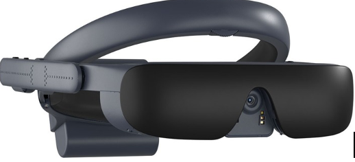
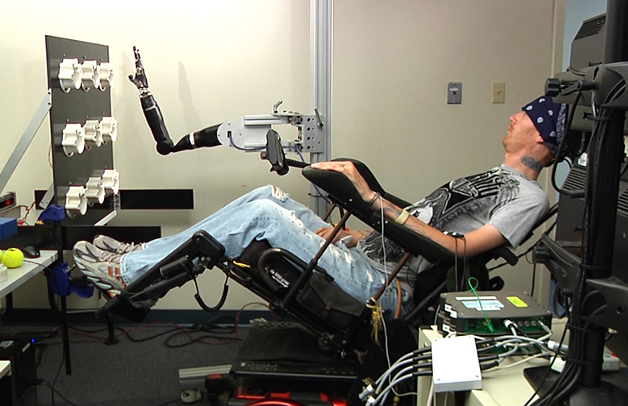

>>>Improve human performance
>>>Develops cognitive and physiological enhancement
>>>Treatment of diseases, disabilities, nerve implants and brain-computer interface technology
----------------------------------------------------------------------------------------------------------------------------------------------------------------------
Physiological enhancement is mainly to enhance the physiological ability to exceed the "species typical level" or "normal functional range". In this process, physiological enhancement often involves two dimensions: physical changes and capacity enhancement. Traditionally, beauty techniques and plastic surgery techniques often interfere with the human body and enhance human abilities from the outside; while emerging intervention techniques have gradually shifted from external intervention to deep inside the body for construction and design, that is, the technology and the body are gradually integrated. . The internal combination of emerging intervention technologies and the body can enhance various physiological abilities of people. First of all, emerging intervention technologies can increase physical strength and shape stronger mobility.
For example, the current human beings are connected to the human's "mutilated" body through medical mechanical bones, so that the body gains "integrity", so that the body that lost its original "components" in the past can regain aesthetics and functionality; of course, military bone equipment can be extremely Greatly enhance the wearer's speed, endurance and strength, which can not only protect the health of the soldiers, but also enhance the soldiers' combat capabilities.
Second, emerging intervention technologies can enhance hearing and expand a new world of perception. For example, humans use cochlear implant technology to enable deaf children to regain hearing ability.
Third, emerging intervention technologies can enhance vision and enhance more effective perception. Vision enhancement technology has two forms: one refers to the use of new wearable devices such as retractable contact lenses, night vision contact lenses, and smart glasses to achieve better perception of the environment; the other refers to intraocular implants that can repair vision , It can receive visual images and convert them into electrical signals to stimulate nerves and transmit information to the brain. In addition, Google Glass, which is currently at the forefront of science and technology, has the powerful function of "expanding reality". Its biggest feature is that it is integrated with human vision and enables human senses to obtain unprecedented visualization capabilities.


Made 1 March 2021
thanks to W3C for tutorial and adapted code from Style Examples
also thanks to WDN for HTML and CSS resources and any adapted code snippets from Mozilla Developer Network